Варіант 4. Виконав Чумак Кирил, група ІПЗ-11(3). Викладач Ковалюк Тетяна Володимирівна.
Мета роботи
- Вивчити особливості оголошення багатовимірних масивів і доступу до їхніх елементів.
- Опанувати базові операції обробки матриць.
- Навчитися розробляти алгоритми та програми обробки двовимірних масивів.
Умови задач
Варіант 4. У таблиці методички 24 варіанти, тому для номера 28 у списку групи маємо 28 - 24 = 4.
Для обох завдань методичка вимагає вибір способу створення: введення з клавіатури або заповнення
псевдовипадковими числами. Бібліотеку STL, покажчики, динамічні масиви, оператори
new і delete застосовувати не можна.
Завдання 1, варіант 4
У лівому верхньому кутку дошки розміром n · m розташований шаховий король. За один хід він може зробити хід вправо, вниз або на одну клітину по діагоналі вправо-вниз. Порахувати кількість маршрутів, що ведуть з лівого верхнього кута шахової дошки в правий нижній кут. Розміри дошки (числа n, m) ввести з клавіатури. На екран вивести кількість шуканих маршрутів і матрицю, в якій елементи, що є маршрутом шахового короля, позначені значенням 1, а елементи, які не входять до шуканих маршрутів, позначені значенням 0.
Завдання 2, варіант 4
Виконати елементарні перетворення матриць:
- перестановку місцями будь-яких двох рядків або стовпців матриці;
- множення на ненульову константу будь-якого рядка або стовпця матриці;
- додавання до будь-якого рядка або стовпця матриці іншого рядка або стовпця, помноженого на ненульову константу.
Для вибору способу створення матриці використовувати меню: введення значень елементів з клавіатури або генерація псевдовипадкових чисел у заданому з клавіатури діапазоні значень. Індекси рядків і стовпців та число для множення задавати з клавіатури. Вивести на екран вхідну матрицю та всі її перетворення з відповідними повідомленнями. Передбачити вибір режиму виведення: тільки кінцевий результат або проміжні результати.
Аналіз задач
Завдання 1, варіант 4
Король потрапляє в клітинку лише з трьох сусідніх: зверху, зліва і зліва згори. Тому кількість маршрутів до клітинки дорівнює сумі маршрутів до цих трьох клітинок:
У першому рядку і першому стовпці король може йти лише прямо, тому там стоїть 1. Програма заповнює матрицю рядок за рядком, а відповіддю є її останній елемент.
В умові є проблема з матрицею маршрутів. До будь-якої клітинки можна дійти з лівого верхнього кута, і від неї можна дійти до правого нижнього, тому кожна клітинка лежить на якомусь маршруті. Матриця всіх маршрутів складалася б із самих одиниць. Тому програма виводить матрицю одного найкоротшого маршруту: король іде діагоналлю, поки можна, а потім прямо. Окремо виводиться таблиця кількості маршрутів до кожної клітинки.
Умова каже вводити розміри з клавіатури, а загальна вимога просить вибір способу створення. Тому
в меню є два пункти: ввести розміри або отримати їх випадково. Розміри лежать від 1 до 10. Для найбільшої
дошки маршрутів 1462563, і таке число вміщається в int. Якщо введено не число або число поза
межами, програма виводить повідомлення і просить ввести ще раз.
Таблиця 1 - Функції програми завдання 1
| Функція | Що робить |
|---|---|
printTitle | виводить назву роботи, автора й умову завдання |
inputNumber | вводить ціле число із заданих меж |
inputBoardSize | вводить розміри дошки |
generateBoardSize | дає розмірам випадкові значення |
chooseBoardSize | виводить меню способу створення дошки |
calculateRoutes | рахує маршрути до кожної клітинки |
markShortestRoute | позначає клітинки найкоротшого маршруту |
printMatrix | виводить матрицю із заданою шириною стовпця |
printResult | виводить кількість маршрутів і дві матриці |
main | викликає ці функції по черзі |
Завдання 2, варіант 4
Елементи матриці мають тип float, бо константа може бути дробовою. З клавіатури можна
ввести будь-які числа, а генератор дає цілі значення із заданого діапазону. Матриця має від 2 до 10
рядків і стовпців, бо для перетворень потрібні два різні рядки або стовпці.
Для кожного з шести перетворень є окрема функція. Рядки і стовпці користувач нумерує з 1, а в коді від номера віднімається 1. Перестановка робиться через тимчасову змінну. Перетворення вибираються в меню, поки користувач не введе 0.
Режим виведення вибирається перед меню. У першому режимі після кожного перетворення виводиться лише повідомлення, а в другому ще й матриця. Кінцева матриця виводиться завжди.
Неправильний номер, однакові номери, нульова константа або літери замість числа дають повідомлення і повторне введення.
Таблиця 2 - Функції програми завдання 2
| Функція | Що робить |
|---|---|
printTitle | виводить назву роботи, автора й умову завдання |
inputNumber | вводить ціле число із заданих меж |
inputConstant | вводить ненульову константу |
inputTwoIndexes | вводить два різні номери |
inputMatrix | вводить матрицю з клавіатури |
generateMatrix | вводить діапазон і заповнює матрицю випадковими числами |
printMatrix | виводить матрицю |
createMatrix | вводить розміри, виводить меню створення і вхідну матрицю |
swapRows, swapColumns | міняють місцями два рядки або стовпці |
multiplyRow, multiplyColumn | множать рядок або стовпець на константу |
addRow, addColumn | додають інший рядок або стовпець, помножений на константу |
runMenu | вибирає режим, виконує меню, виводить кінцеву матрицю |
main | викликає ці функції по черзі |
Джерела: Ковалюк Т.В. Алгоритмізація та програмування, 2024; Ковалюк Т.В., Петрівський В.Я. Гарний стиль програмування мовами C, C++, C#, 2025; Deitel P., Deitel H. C++ How to Program.
Блок-схеми алгоритмів
Завдання 1, варіант 4

printTitle (виведення назви роботи, автора й умови завдання)
inputNumber (введення цілого числа із заданих меж)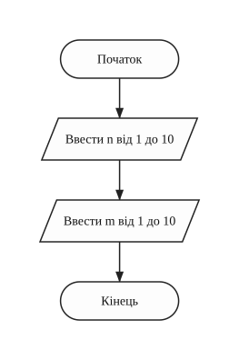
inputBoardSize (введення розмірів дошки з клавіатури)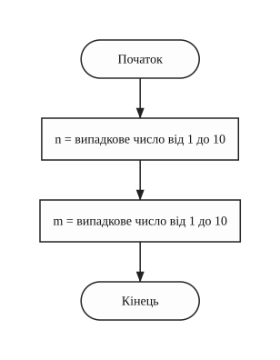
generateBoardSize (псевдовипадкові розміри дошки)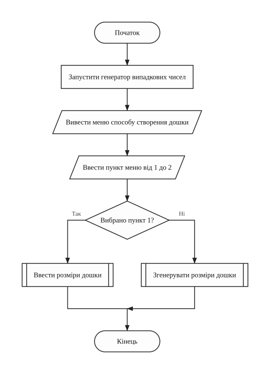
chooseBoardSize (меню способу створення дошки)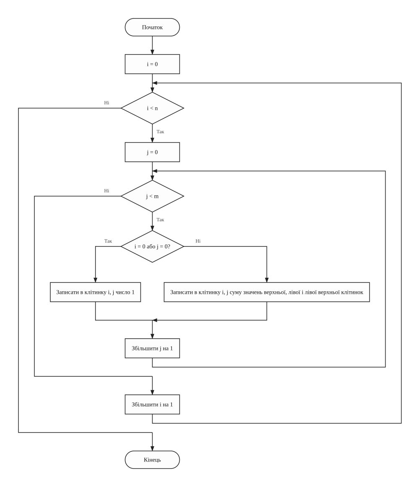
calculateRoutes (кількість маршрутів до кожної клітинки)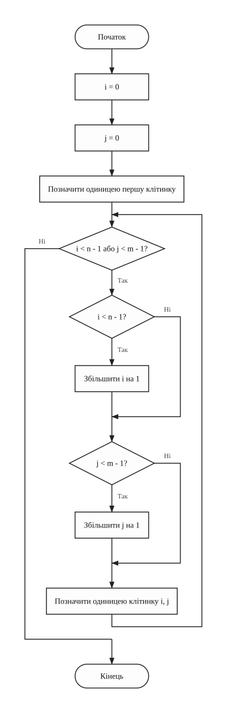
markShortestRoute (позначення клітинок найкоротшого маршруту)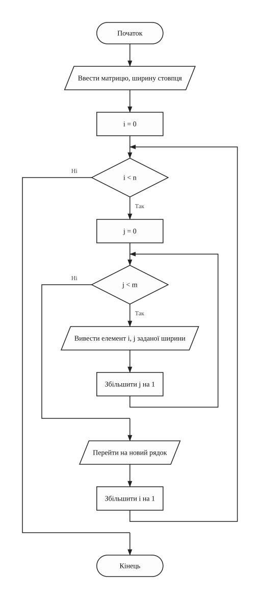
printMatrix (виведення матриці рядками і стовпцями)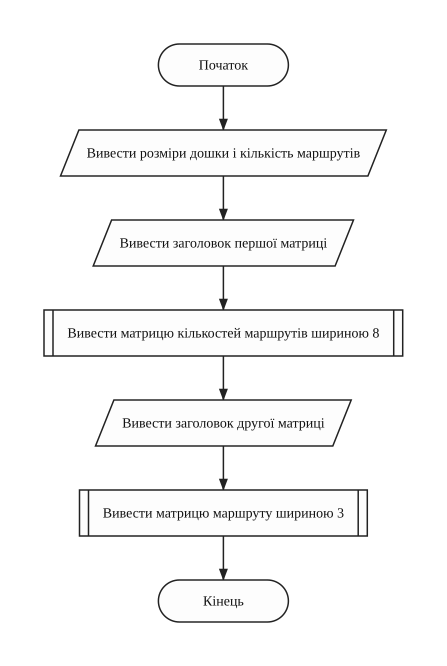
printResult (виведення кількості маршрутів і двох матриць)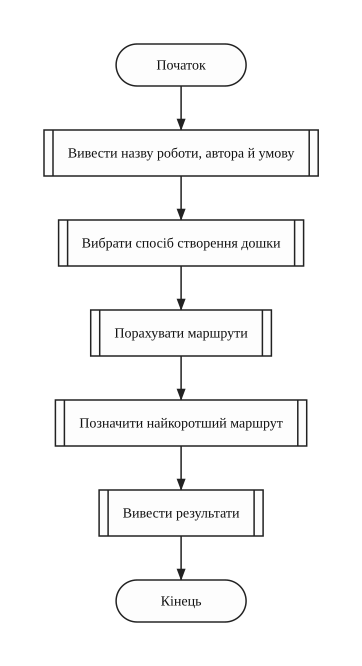
main (головна функція)Завдання 2, варіант 4

printTitle (виведення назви роботи, автора й умови завдання)
inputNumber (введення цілого числа із заданих меж)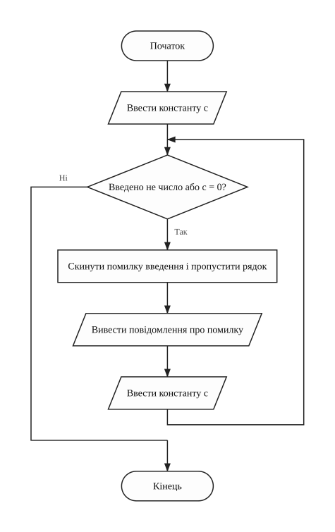
inputConstant (введення ненульової константи)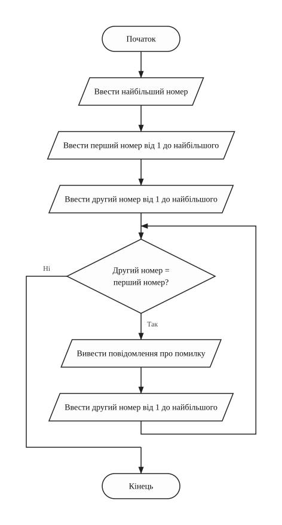
inputTwoIndexes (введення двох різних номерів)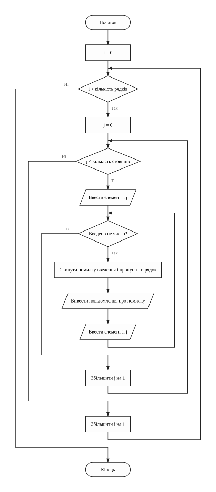
inputMatrix (введення елементів матриці з клавіатури)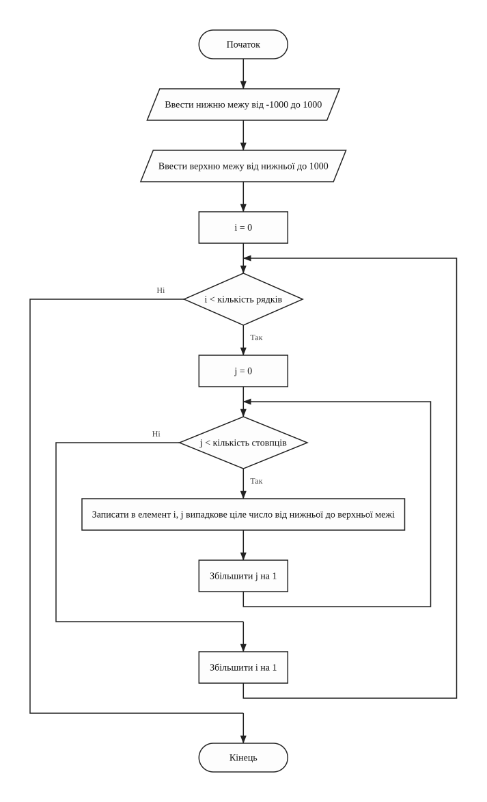
generateMatrix (заповнення матриці псевдовипадковими числами)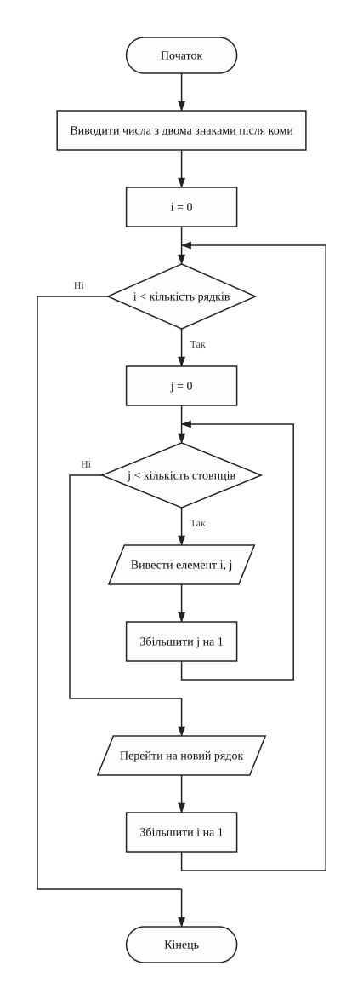
printMatrix (виведення матриці рядками і стовпцями)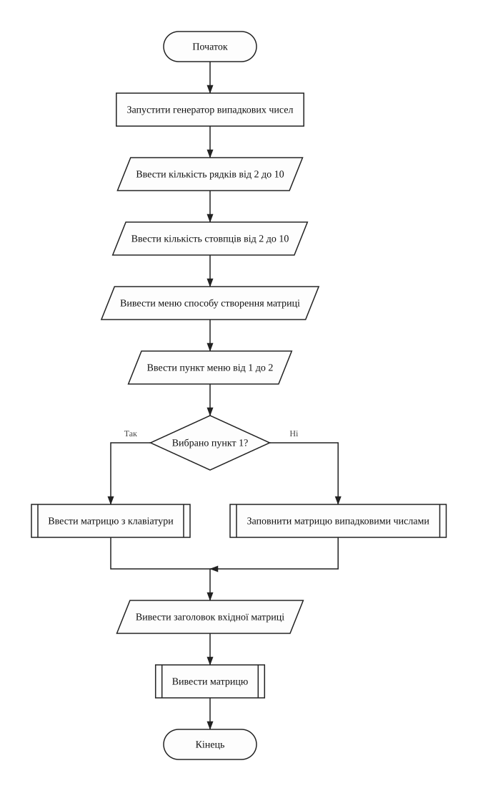
createMatrix (введення розмірів і створення вхідної матриці)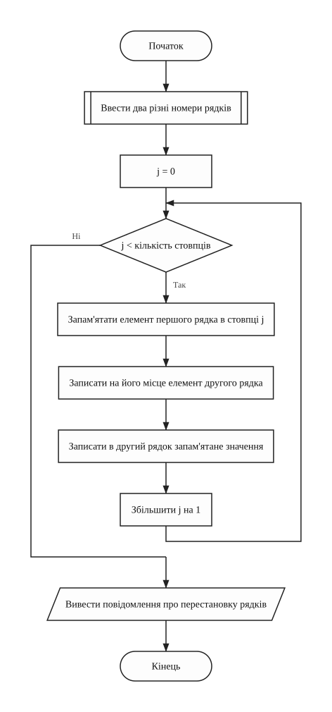
swapRows (перестановка двох рядків)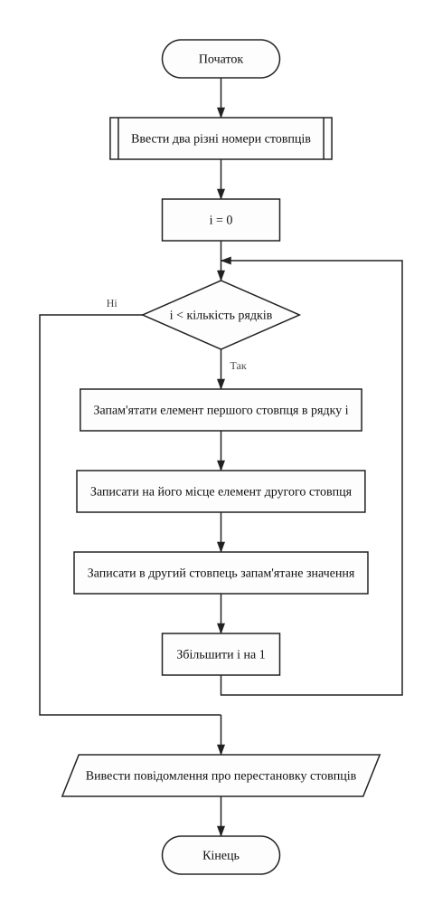
swapColumns (перестановка двох стовпців)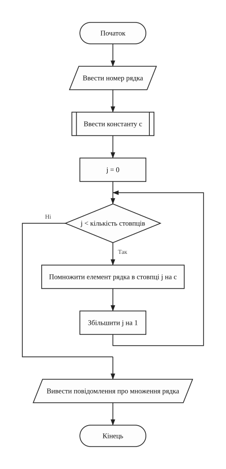
multiplyRow (множення рядка на константу)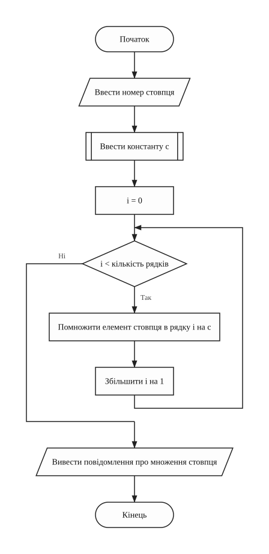
multiplyColumn (множення стовпця на константу)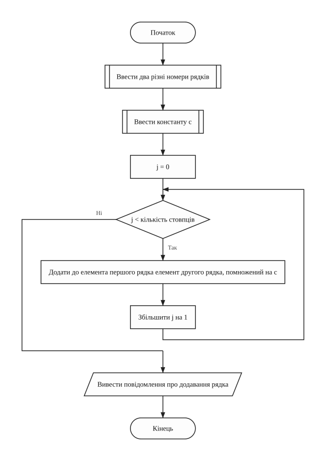
addRow (додавання до рядка іншого рядка, помноженого на константу)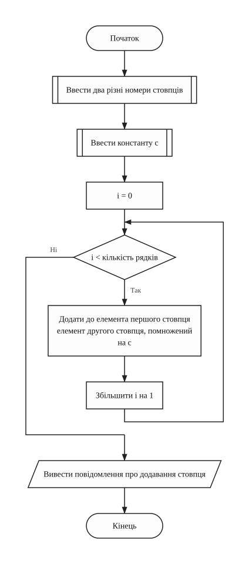
addColumn (додавання до стовпця іншого стовпця, помноженого на константу)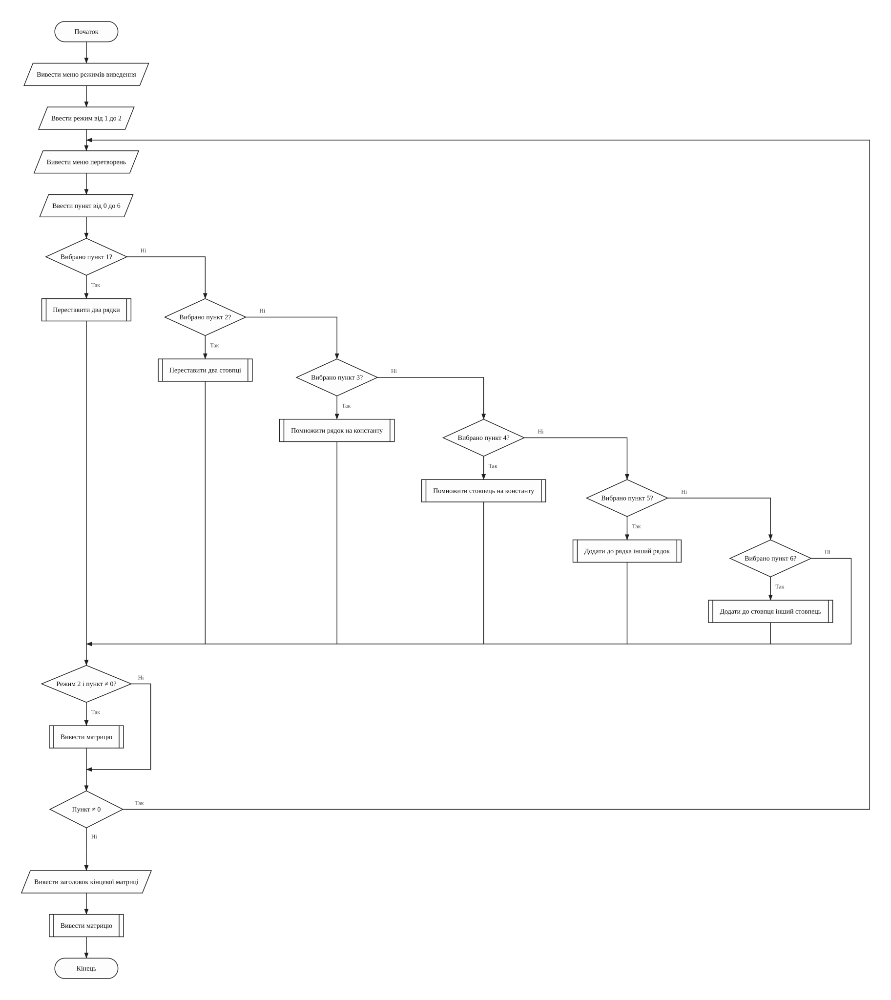
runMenu (вибір режиму виведення і меню перетворень)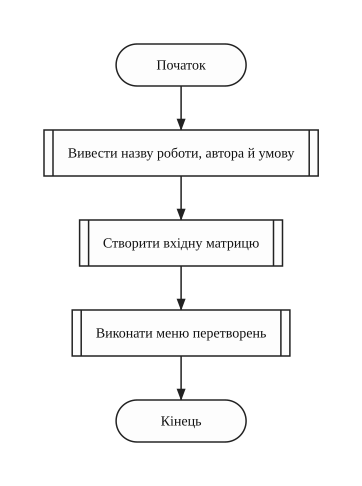
main (головна функція)Тексти програм
Завдання 1, варіант 4
Файл task1.cpp
/// <summary>
/// Лабораторна робота №7, завдання 1, варіант 4. Порахувати маршрути шахового
/// короля на дошці n * m і вивести матрицю найкоротшого маршруту.
/// </summary>
/// <remarks>
/// Ім'я файлу: task1.cpp
/// Автор: Чумак Кирил, гр. ІПЗ-11(3)
/// Номер версії модуля: version 1
/// </remarks>
#include <cstdlib>
#include <ctime>
#include <iomanip>
#include <iostream>
using namespace std;
// Константи
const int MAX_SIZE = 10; // найбільший розмір дошки
// Глобальні змінні
int routeCounts[MAX_SIZE][MAX_SIZE] = {{0}}; // кількість маршрутів до клітинки
int routeCells[MAX_SIZE][MAX_SIZE] = {{0}}; // 1 - клітинка маршруту, 0 - інша
int rowCount = 0; // кількість рядків n
int columnCount = 0; // кількість стовпців m
int choice = 0; // вибраний пункт меню
/// <summary>
/// Виводить назву роботи, автора і короткий зміст задачі
/// </summary>
void printTitle()
{
cout << "Lab work 7. Task 1. Variant 4." << endl;
cout << "Author: Kyryl Chumak, group IPZ-11(3)" << endl << endl;
cout << "A chess king starts in the top left corner of an n x m" << endl;
cout << "board. It moves right, down or right-down along the" << endl;
cout << "diagonal. Count its routes to the bottom right corner." << endl;
cout << "Print the number of routes and a matrix where route cells" << endl;
cout << "are 1 and the others are 0." << endl << endl;
}
/// <summary>
/// Вводить ціле число із заданих меж. Поки введено не число або число поза
/// межами, введення повторюється
/// </summary>
/// <param name="minValue">нижня межа</param>
/// <param name="maxValue">верхня межа</param>
/// <returns>введене число</returns>
int inputNumber(int minValue, int maxValue)
{
int number = 0; // введене число
cin >> number;
while (cin.fail() || number < minValue || number > maxValue)
{
cin.clear(); // скинути помилку введення
cin.ignore(1000, '\n'); // і пропустити неправильний рядок
cout << "Error! Enter a number from " << minValue << " to " << maxValue
<< ": ";
cin >> number;
}
return number;
}
/// <summary>
/// Вводить розміри дошки з клавіатури
/// </summary>
void inputBoardSize()
{
cout << "Enter n (from 1 to " << MAX_SIZE << "): ";
rowCount = inputNumber(1, MAX_SIZE);
cout << "Enter m (from 1 to " << MAX_SIZE << "): ";
columnCount = inputNumber(1, MAX_SIZE);
}
/// <summary>
/// Дає розмірам дошки псевдовипадкові значення від 1 до 10
/// </summary>
void generateBoardSize()
{
rowCount = rand() % MAX_SIZE + 1;
columnCount = rand() % MAX_SIZE + 1;
}
/// <summary>
/// Виводить меню способу створення дошки і виконує вибраний пункт
/// </summary>
void chooseBoardSize()
{
srand(time(NULL));
cout << "1 - enter the board size" << endl;
cout << "2 - generate the board size at random" << endl;
cout << "Your choice: ";
choice = inputNumber(1, 2);
switch (choice)
{
case 1 : inputBoardSize(); break;
default : generateBoardSize(); break; // пункт 2
}
}
/// <summary>
/// Рахує кількість маршрутів до кожної клітинки. До клітинки першого рядка чи
/// стовпця веде один маршрут, а до решти стільки, скільки сумарно до лівої,
/// верхньої і лівої верхньої сусідніх
/// </summary>
void calculateRoutes()
{
int i = 0; // номер рядка
int j = 0; // номер стовпця
for (i = 0; i < rowCount; i++)
{
for (j = 0; j < columnCount; j++)
{
if (i == 0 || j == 0)
{
routeCounts[i][j] = 1;
}
else
{
routeCounts[i][j] = routeCounts[i - 1][j]
+ routeCounts[i][j - 1]
+ routeCounts[i - 1][j - 1];
}
}
}
}
/// <summary>
/// Позначає клітинки найкоротшого маршруту: король іде діагоналлю, поки можна,
/// а потім прямо
/// </summary>
void markShortestRoute()
{
int i = 0; // поточний рядок короля
int j = 0; // поточний стовпець короля
routeCells[0][0] = 1;
while (i < rowCount - 1 || j < columnCount - 1)
{
if (i < rowCount - 1)
{
i++;
}
if (j < columnCount - 1)
{
j++;
}
routeCells[i][j] = 1;
}
}
/// <summary>
/// Виводить матрицю рядками і стовпцями
/// </summary>
/// <param name="matrix">матриця</param>
/// <param name="width">ширина стовпця</param>
void printMatrix(int matrix[MAX_SIZE][MAX_SIZE], int width)
{
int i = 0; // номер рядка
int j = 0; // номер стовпця
for (i = 0; i < rowCount; i++)
{
for (j = 0; j < columnCount; j++)
{
cout << setw(width) << matrix[i][j];
}
cout << endl;
}
}
/// <summary>
/// Виводить розміри дошки, кількість маршрутів і дві матриці
/// </summary>
void printResult()
{
cout << endl << "Board size: " << rowCount << " x " << columnCount << endl;
cout << "Number of routes: " << routeCounts[rowCount - 1][columnCount - 1]
<< endl;
cout << endl << "Number of routes to each cell:" << endl;
printMatrix(routeCounts, 8);
cout << endl << "One shortest route (1 - on the route, 0 - not):" << endl;
printMatrix(routeCells, 3);
}
/// <summary>
/// Головна функція програми
/// </summary>
/// <returns>0 після завершення роботи</returns>
int main()
{
printTitle();
chooseBoardSize();
calculateRoutes();
markShortestRoute();
printResult();
return 0;
}
Завдання 2, варіант 4
Файл task2.cpp
/// <summary>
/// Лабораторна робота №7, завдання 2, варіант 4. Виконати елементарні
/// перетворення матриці, які користувач вибирає в меню.
/// </summary>
/// <remarks>
/// Ім'я файлу: task2.cpp
/// Автор: Чумак Кирил, гр. ІПЗ-11(3)
/// Номер версії модуля: version 1
/// </remarks>
#include <cstdlib>
#include <ctime>
#include <iomanip>
#include <iostream>
using namespace std;
// Константи
const int MIN_SIZE = 2; // найменша кількість рядків і стовпців
const int MAX_SIZE = 10; // найбільша кількість рядків і стовпців
const int MAX_LIMIT = 1000; // найбільший модуль меж діапазону
// Глобальні змінні
float matrix[MAX_SIZE][MAX_SIZE] = {{0}}; // матриця
int rowCount = 0; // кількість рядків
int columnCount = 0; // кількість стовпців
int firstIndex = 0; // номер першого рядка чи стовпця, від 1
int secondIndex = 0; // номер другого рядка чи стовпця, від 1
float constant = 0; // ненульове число для множення
int outputMode = 0; // 1 - лише кінцева матриця, 2 - після кожного кроку
int choice = 0; // вибраний пункт меню
/// <summary>
/// Виводить назву роботи й автора
/// </summary>
void printTitle()
{
cout << "Lab work 7. Task 2. Variant 4." << endl;
cout << "Author: Kyryl Chumak, group IPZ-11(3)" << endl << endl;
cout << "Elementary transformations of a matrix:" << endl;
cout << "- swap two rows or two columns;" << endl;
cout << "- multiply a row or a column by a non-zero constant;" << endl;
cout << "- add to a row or a column another one multiplied" << endl;
cout << " by a non-zero constant." << endl;
cout << "The matrix is entered from the keyboard or generated in a" << endl;
cout << "given range." << endl << endl;
}
/// <summary>
/// Вводить ціле число із заданих меж. Поки введено не число або число поза
/// межами, введення повторюється
/// </summary>
/// <param name="minValue">нижня межа</param>
/// <param name="maxValue">верхня межа</param>
/// <returns>введене число</returns>
int inputNumber(int minValue, int maxValue)
{
int number = 0; // введене число
cin >> number;
while (cin.fail() || number < minValue || number > maxValue)
{
cin.clear(); // скинути помилку введення
cin.ignore(1000, '\n'); // і пропустити неправильний рядок
cout << "Error! Enter a number from " << minValue << " to " << maxValue
<< ": ";
cin >> number;
}
return number;
}
/// <summary>
/// Вводить константу для множення. Поки введено не число або нуль, введення
/// повторюється
/// </summary>
void inputConstant()
{
cout << "Enter a non-zero constant: ";
cin >> constant;
while (cin.fail() || constant == 0)
{
cin.clear();
cin.ignore(1000, '\n');
cout << "Error! Enter a non-zero constant: ";
cin >> constant;
}
}
/// <summary>
/// Вводить два різні номери рядків або стовпців
/// </summary>
/// <param name="maxIndex">найбільший номер</param>
void inputTwoIndexes(int maxIndex)
{
cout << "Enter the first index (from 1 to " << maxIndex << "): ";
firstIndex = inputNumber(1, maxIndex);
cout << "Enter the second index (from 1 to " << maxIndex << "): ";
secondIndex = inputNumber(1, maxIndex);
while (secondIndex == firstIndex)
{
cout << "Error! The second index must differ from the first: ";
secondIndex = inputNumber(1, maxIndex);
}
}
/// <summary>
/// Вводить елементи матриці з клавіатури
/// </summary>
void inputMatrix()
{
int i = 0; // номер рядка
int j = 0; // номер стовпця
for (i = 0; i < rowCount; i++)
{
cout << "Enter row " << i + 1 << " (" << columnCount << " numbers): ";
for (j = 0; j < columnCount; j++)
{
cin >> matrix[i][j];
while (cin.fail())
{
cin.clear();
cin.ignore(1000, '\n');
cout << "Error! Enter a number: ";
cin >> matrix[i][j];
}
}
}
}
/// <summary>
/// Вводить діапазон і заповнює матрицю псевдовипадковими цілими числами з нього
/// </summary>
void generateMatrix()
{
int lowerLimit = 0; // нижня межа діапазону
int upperLimit = 0; // верхня межа діапазону
int i = 0; // номер рядка
int j = 0; // номер стовпця
cout << "Enter the lower limit (from " << -MAX_LIMIT << " to " << MAX_LIMIT
<< "): ";
lowerLimit = inputNumber(-MAX_LIMIT, MAX_LIMIT);
cout << "Enter the upper limit (from " << lowerLimit << " to " << MAX_LIMIT
<< "): ";
upperLimit = inputNumber(lowerLimit, MAX_LIMIT);
for (i = 0; i < rowCount; i++)
{
for (j = 0; j < columnCount; j++)
{
matrix[i][j] = rand() % (upperLimit - lowerLimit + 1) + lowerLimit;
}
}
}
/// <summary>
/// Виводить матрицю рядками і стовпцями
/// </summary>
void printMatrix()
{
int i = 0; // номер рядка
int j = 0; // номер стовпця
cout << fixed << setprecision(2);
for (i = 0; i < rowCount; i++)
{
for (j = 0; j < columnCount; j++)
{
cout << setw(10) << matrix[i][j];
}
cout << endl;
}
}
/// <summary>
/// Вводить розміри, виводить меню способу створення матриці, виконує вибраний
/// пункт і виводить вхідну матрицю
/// </summary>
void createMatrix()
{
srand(time(NULL));
cout << "Enter the number of rows (from " << MIN_SIZE << " to " << MAX_SIZE
<< "): ";
rowCount = inputNumber(MIN_SIZE, MAX_SIZE);
cout << "Enter the number of columns (from " << MIN_SIZE << " to "
<< MAX_SIZE << "): ";
columnCount = inputNumber(MIN_SIZE, MAX_SIZE);
cout << "1 - enter the matrix from the keyboard" << endl;
cout << "2 - fill the matrix with pseudorandom numbers" << endl;
cout << "Your choice: ";
choice = inputNumber(1, 2);
switch (choice)
{
case 1 : inputMatrix(); break;
default : generateMatrix(); break; // пункт 2
}
cout << endl << "Input matrix:" << endl;
printMatrix();
}
/// <summary>
/// Міняє місцями два рядки
/// </summary>
void swapRows()
{
float temporary = 0; // значення для обміну
int j = 0; // номер стовпця
inputTwoIndexes(rowCount);
for (j = 0; j < columnCount; j++)
{
temporary = matrix[firstIndex - 1][j];
matrix[firstIndex - 1][j] = matrix[secondIndex - 1][j];
matrix[secondIndex - 1][j] = temporary;
}
cout << "Rows " << firstIndex << " and " << secondIndex << " are swapped."
<< endl;
}
/// <summary>
/// Міняє місцями два стовпці
/// </summary>
void swapColumns()
{
float temporary = 0; // значення для обміну
int i = 0; // номер рядка
inputTwoIndexes(columnCount);
for (i = 0; i < rowCount; i++)
{
temporary = matrix[i][firstIndex - 1];
matrix[i][firstIndex - 1] = matrix[i][secondIndex - 1];
matrix[i][secondIndex - 1] = temporary;
}
cout << "Columns " << firstIndex << " and " << secondIndex
<< " are swapped." << endl;
}
/// <summary>
/// Множить рядок на ненульову константу
/// </summary>
void multiplyRow()
{
int j = 0; // номер стовпця
cout << "Enter the row index (from 1 to " << rowCount << "): ";
firstIndex = inputNumber(1, rowCount);
inputConstant();
for (j = 0; j < columnCount; j++)
{
matrix[firstIndex - 1][j] = matrix[firstIndex - 1][j] * constant;
}
cout << "Row " << firstIndex << " is multiplied by " << constant << "."
<< endl;
}
/// <summary>
/// Множить стовпець на ненульову константу
/// </summary>
void multiplyColumn()
{
int i = 0; // номер рядка
cout << "Enter the column index (from 1 to " << columnCount << "): ";
firstIndex = inputNumber(1, columnCount);
inputConstant();
for (i = 0; i < rowCount; i++)
{
matrix[i][firstIndex - 1] = matrix[i][firstIndex - 1] * constant;
}
cout << "Column " << firstIndex << " is multiplied by " << constant << "."
<< endl;
}
/// <summary>
/// Додає до першого рядка другий, помножений на константу
/// </summary>
void addRow()
{
int j = 0; // номер стовпця
inputTwoIndexes(rowCount);
inputConstant();
for (j = 0; j < columnCount; j++)
{
matrix[firstIndex - 1][j] =
matrix[firstIndex - 1][j] + matrix[secondIndex - 1][j] * constant;
}
cout << "Row " << secondIndex << " multiplied by " << constant
<< " is added to row " << firstIndex << "." << endl;
}
/// <summary>
/// Додає до першого стовпця другий, помножений на константу
/// </summary>
void addColumn()
{
int i = 0; // номер рядка
inputTwoIndexes(columnCount);
inputConstant();
for (i = 0; i < rowCount; i++)
{
matrix[i][firstIndex - 1] =
matrix[i][firstIndex - 1] + matrix[i][secondIndex - 1] * constant;
}
cout << "Column " << secondIndex << " multiplied by " << constant
<< " is added to column " << firstIndex << "." << endl;
}
/// <summary>
/// Вводить режим виведення, виводить меню перетворень і виконує вибрані пункти,
/// поки користувач не вибере завершення. Після цього виводить кінцеву матрицю
/// </summary>
void runMenu()
{
cout << endl << "1 - show only the final matrix" << endl;
cout << "2 - show the matrix after each transformation" << endl;
cout << "Your choice: ";
outputMode = inputNumber(1, 2);
do
{
cout << endl << "1 - swap two rows" << endl;
cout << "2 - swap two columns" << endl;
cout << "3 - multiply a row by a constant" << endl;
cout << "4 - multiply a column by a constant" << endl;
cout << "5 - add another row multiplied by a constant to a row" << endl;
cout << "6 - add another column multiplied by a constant to a column"
<< endl;
cout << "0 - finish" << endl;
cout << "Your choice: ";
choice = inputNumber(0, 6);
switch (choice)
{
case 1 : swapRows(); break;
case 2 : swapColumns(); break;
case 3 : multiplyRow(); break;
case 4 : multiplyColumn(); break;
case 5 : addRow(); break;
case 6 : addColumn(); break;
default : break; // пункт 0
}
if (outputMode == 2 && choice != 0)
{
printMatrix();
}
} while (choice != 0);
cout << endl << "Final matrix:" << endl;
printMatrix();
}
/// <summary>
/// Головна функція програми
/// </summary>
/// <returns>0 після завершення роботи</returns>
int main()
{
printTitle();
createMatrix();
runMenu();
return 0;
}
Результати виконання
Завдання 1, варіант 4
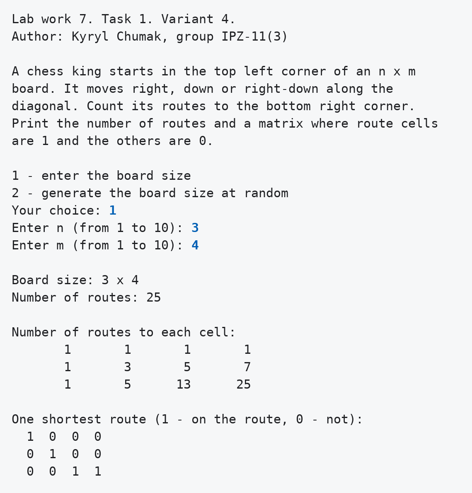
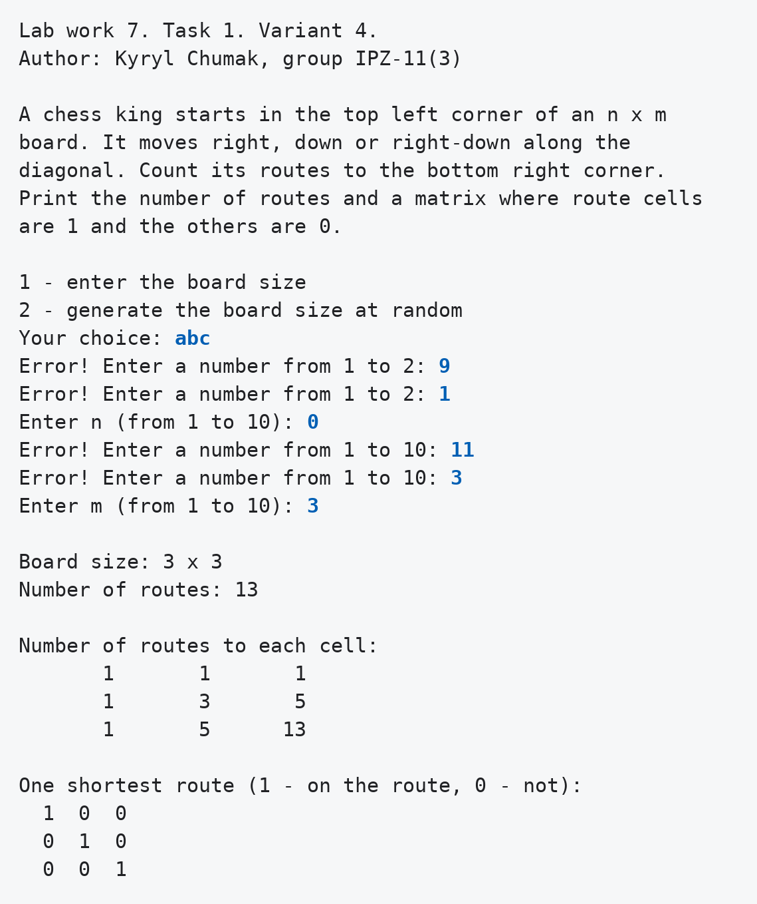
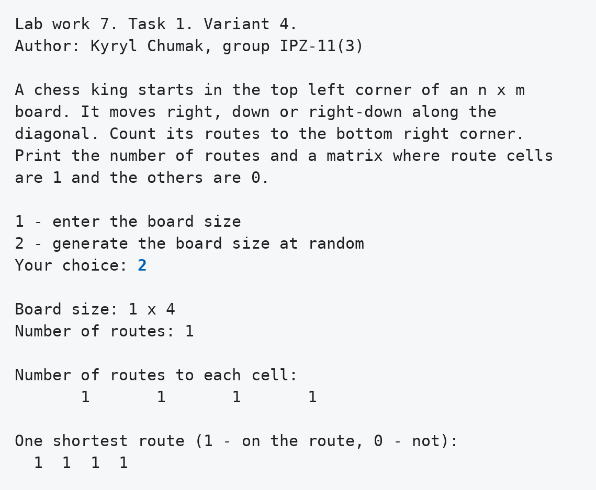
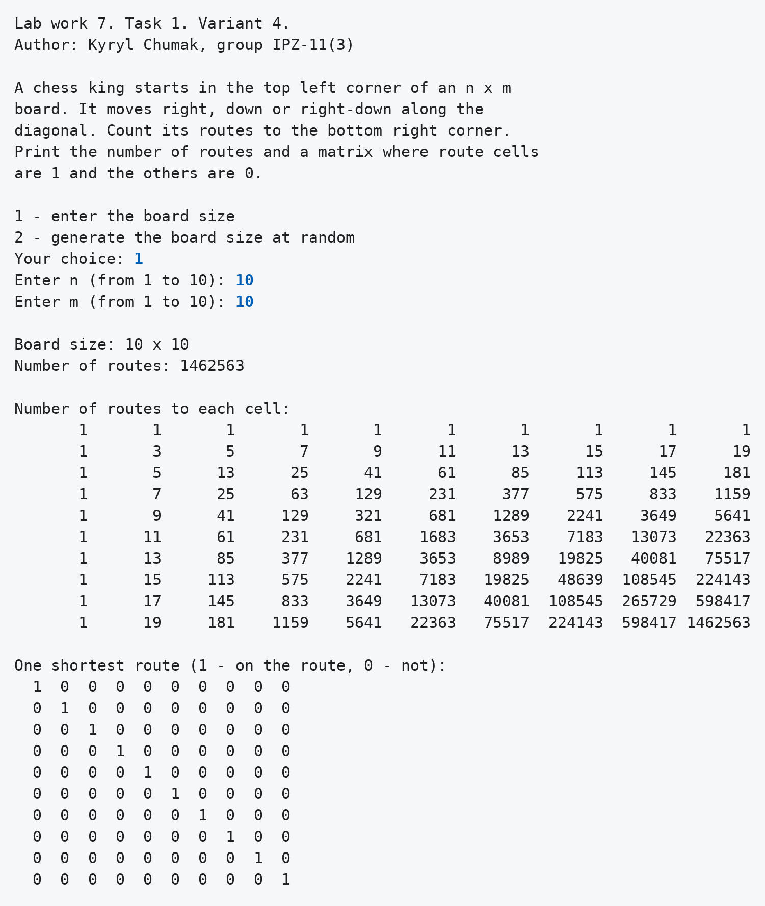
Завдання 2, варіант 4
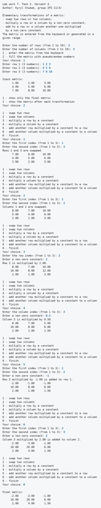
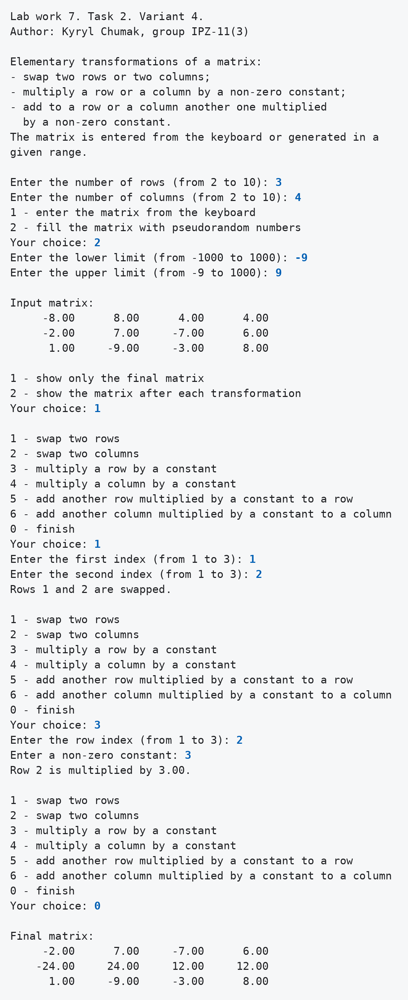
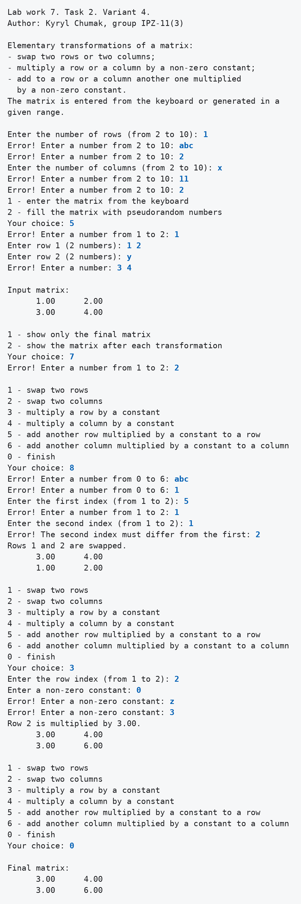
Аналіз достовірності результатів
Завдання 1, варіант 4
Кількість маршрутів я порахував ще одним способом, вручну. Нехай у маршруті d ходів по діагоналі. Тоді решта ходів вниз і вправо, а всі ходи можна переставляти. Для кожного d рахується кількість перестановок, і результати додаються.
Таблиця 3 - Кількість маршрутів, порахована вручну
| Дошка | d = 0 | d = 1 | d = 2 | Сума | Програма |
|---|---|---|---|---|---|
| 2 · 2 | 2 | 1 | 3 | 3 (другий рядок, другий стовпець таблиці дошки 3 · 3) | |
| 3 · 3 | 6 | 6 | 1 | 13 | 13 |
| 3 · 4 | 10 | 12 | 3 | 25 | 25 |
Для дошки 3 · 4 значення з формули теж збігається: 7 + 13 + 5 = 25. У запуску з випадковими розмірами вийшла дошка 1 · 4. Там король іде лише вправо, маршрут один, і програма вивела 1. На дошці 3 · 4 найкоротший маршрут має 3 ходи: дві діагоналі і один хід вправо. У матриці програми стоять чотири одиниці, а діагональ обривається в останньому рядку.
Завдання 2, варіант 4
Перетворення першого запуску я виконав вручну, починаючи з матриці 1 2 3; 4 5 6; 7 8 10.
Таблиця 4 - Перетворення, виконані вручну
| Перетворення | Вручну | Програма |
|---|---|---|
| переставити рядки 1 і 3 | 7 8 10; 4 5 6; 1 2 3 | 7.00 8.00 10.00; 4.00 5.00 6.00; 1.00 2.00 3.00 |
| переставити стовпці 1 і 2 | 8 7 10; 5 4 6; 2 1 3 | 8.00 7.00 10.00; 5.00 4.00 6.00; 2.00 1.00 3.00 |
| рядок 2 помножити на 2 | 8 7 10; 10 8 12; 2 1 3 | 8.00 7.00 10.00; 10.00 8.00 12.00; 2.00 1.00 3.00 |
| стовпець 3 помножити на 0.5 | 8 7 5; 10 8 6; 2 1 1.5 | 8.00 7.00 5.00; 10.00 8.00 6.00; 2.00 1.00 1.50 |
| до рядка 1 додати рядок 2, помножений на -1 | -2 -1 -1; 10 8 6; 2 1 1.5 | -2.00 -1.00 -1.00; 10.00 8.00 6.00; 2.00 1.00 1.50 |
| до стовпця 2 додати стовпець 3, помножений на 2 | -2 -3 -1; 10 20 6; 2 4 1.5 | -2.00 -3.00 -1.00; 10.00 20.00 6.00; 2.00 4.00 1.50 |
Ще одна перевірка через визначник. Дві перестановки разом не змінюють знак, множники 2 і 0.5 скорочуються, а додавання визначника не змінює. Отже, кінцева матриця повинна мати той самий визначник, що й вхідна:
Числа збіглися. У другому запуску рядки 1 і 2 помінялися місцями, а другий рядок помножився на 3: -8 8 4 4 стало -24 24 12 12. Програма вивела те саме. Третій запуск показує, що всі некоректні значення викликають повторне введення, а програма після них працює далі.
Висновки
У першому завданні кількість маршрутів рахується сумою трьох сусідніх клітинок. Умову про матрицю нулів і одиниць довелося уточнити: усі клітинки лежать на якихось маршрутах, тому програма показує один найкоротший. Ручний підрахунок за кількістю діагональних ходів дав ті самі 3, 13 і 25.
У другому завданні зроблено всі шість елементарних перетворень із меню, два способи створення матриці й два режими виведення. Ручні обчислення збіглися з виводом на кожному кроці, а визначник лишився -3.